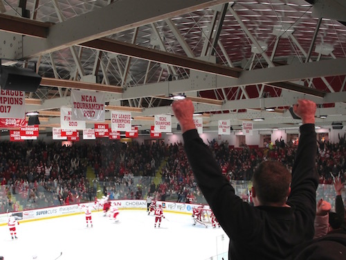
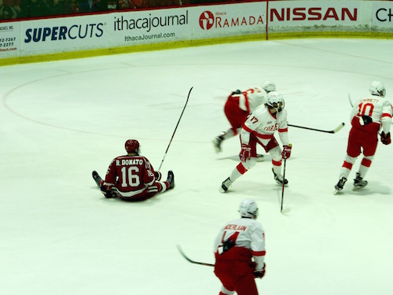
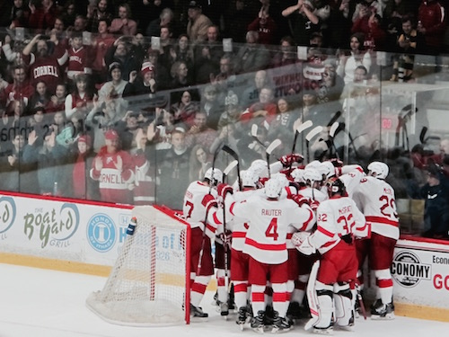

Victory on Ice: The 2017 Cornell Harvard Game
The Cornell Harvard Game is a big deal on campus. Harvard is our biggest rival when it comes to ice hockey. That game seriously brings out Big Red Spirit, far more than Homecoming does. If you didn’t know we’re not the greatest at football. Our forte is ice hockey.
The energy in the arena was unimaginable as everyone is excited and antsy for the game to start. Once Harvard steps foot on the ice, fish is thrown onto the ice. Some people say that the fish is thrown as a reference to the seafood industry at Boston. Other people say that the fish is thrown because fish is smelly and disgusting.
Since this was my first Cornell Harvard game I wanted to savor the moment by taking my camera along with me to take photos. Here are my best shots and the story behind the photos.
This photo was taken right after Cornell scored their first point. The person in front of me was posed in a way that screamed victory to me. I thought that this photo captured the essence of how each point the Big Red scores against the Crimson is momentous in proving our superiority in hockey.
Now this photo has a big story! And I’m actually really glad I got it. With sports photography you have to move quickly. You can’t hesitate. In an instant the moment you wanted is gone. This might look like just a photo of a Harvard player just sitting there looking at Cornell as Cornell scores. But, this actually isn’t just any Harvard player. When I looked this player up on the roster I found that his name is Ryan Donato. And it turns out that he is the son of Harvard’s coach! Plus, he ended up playing for Team USA at the 2018 Winter Olympics in Pyeongchang. Oh, and here’s another thing! He ended up leaving Harvard in the spring to go play for the Boston Bruins in the 2018 Stanley Cup Playoffs. That’s the one thing about the Cornell Harvard hockey game. We both have really good teams and every one of those players on the roster is talented. You get to see some of the most skilled players in the world play before they’re really known to anyone. You get to see the best develop before they go off into the NHL.
The best photo I have of the game is this one. I actually went to this game with the hopes of getting this exact photo. I knew this would be a good photo. It’s the team all huddled up proudly together because they just won the Cornell Harvard game! Plus, what makes this a good photo is that when you look at the fans in stadium they’re up against the glass and many of them are clapping. The crowd is a mixture of current students and alumni, which can tell you that if even alumni go to the game it shows how much Cornellians take their hockey seriously. Also, fun fact! Cornell posted this photo on their Instagram and Facebook . So over 6000 people have seen my work! It’s sort of surreal that a photo I took was able to unite so many people around the world under the common joy of beating the Harvard Crimson!
I believe that through images you can keep reliving a moment. And I know that years from now that when I look back at these photos I took I’ll be glad I brought my camera along that day. I got to capture in just a few images the pride of being a Cornellian.